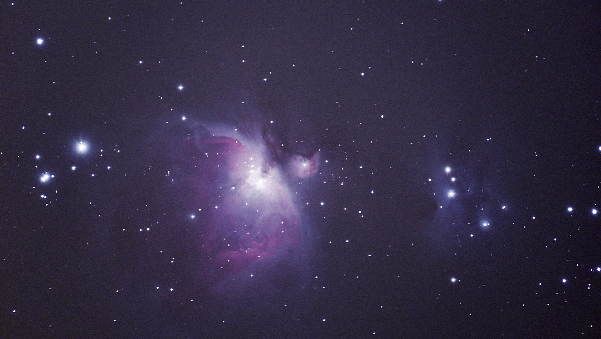

La autosimilitud es una característica de los fractales: todas las escalas son idénticas excepto por su tamaño. Esta compresión arroja mucha data sobre nuestra posición en la “escala de vida” en el Universo.
Cada célula de tu cuerpo es una unidad que elabora y procesa su alimento, lo desecha y cumple una función. Pero al mismo tiempo, cada célula contiene un modelo de información acerca de la TOTALIDAD y es influida por la unidad orgánica de la cual forma parte. Podemos decir que cada elemento posee cierto grado de independencia, pero simultáneamente de dependencia con respecto a la unidad de la cual forma parte.
Para cada célula, las influencias que recibe provienen de una Unidad misteriosa, inaccesible y trascendente (el cuerpo entero).
Exactamente lo mismo sucede en la siguiente escala del fractal. La consciencia individual -cuya totalidad se limita en principio al cuerpo- recibe influencias misteriosas e inaccesibles de una UNIDAD que la trasciende. La Psicofisiología denomina esta red Hipercampo, y podría definirse como el sustrato energético estructural de la Conciencia Planetaria. De “La Meditación”, J. Grinberg:
“…Sabemos, por los últimos descubrimientos psicofisiológicos, que el cerebro humano mantiene un constante intercambio energético con el resto de los cerebros … Estos campos crean una especie de red de interacciones sostenidas por la estructura del Espacio. Esta red vibrante, viva y dinámica, constituye el nivel más refinado de la Noosfera y en ella se inscribe el conjunto de la actividad cerebral de la especie humana.”